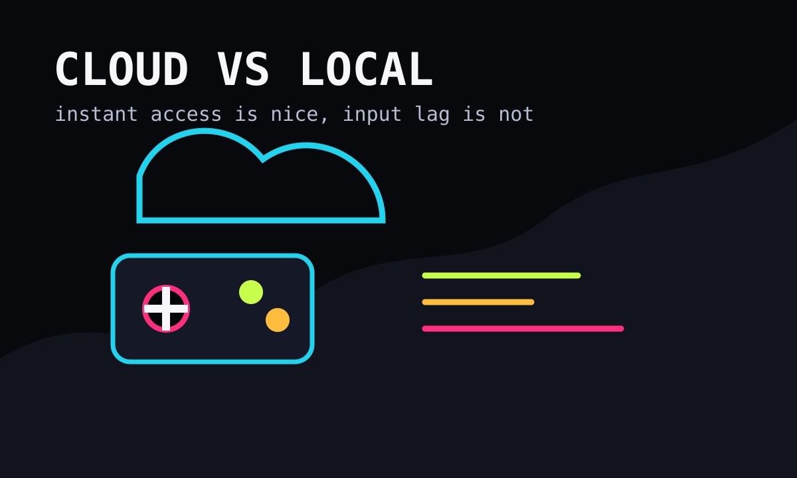

guide · Cloud gaming
Cloud Gaming Is Fast. Local Still Feels Better.
Cloud gaming removes downloads and hardware friction, but retro players still care about control, latency and ownership.

TL;DR
Cloud gaming is convenient, but retro games feel best when input is instant.
Why gamers care
Arcade shooters, fighters and platformers punish delay. A tiny lag can ruin the run.
Move
Browse online, save favorites, then use local play for games where timing matters.
The short version
Cloud gaming is great when you want to try something fast. No download, no install, no storage drama. But retro games are different: they are all timing.
Where cloud loses points
A modern story game can survive a bit of delay. A boss fight in a beat em up, a Galaga dodge or a Street Fighter input feels worse immediately if latency appears.
Best setup
Use the browser as the arcade lobby. Use local import or desktop play when you care about response, saves and a clean session.
Sources and further reading
Keep exploring
Open the Game Room or visit the latest stories.